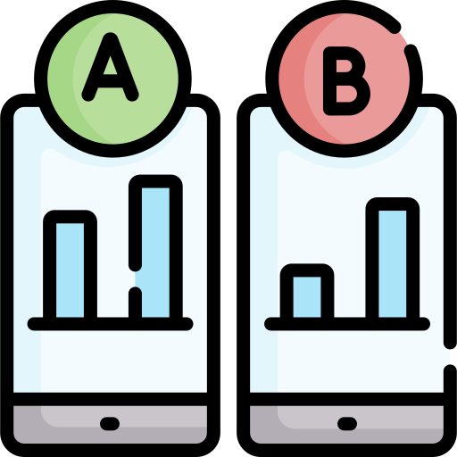

Research Skills

I currently work as a competitive Intelligence Analyst, I have a MSc in forensic psychology. As part of my B.Sc. and M.Sc. I completed modules for research methods, advanced research methods, and data analysis. Mainly focusing on planning, data collection, cleansing, manipulate, visualisation, hypothesis testing and reporting. I am skilled in both quantitative and qualitative research. I am self-taught in R and Python having been using both since 2017. I am keen to further my career in data and research.
-> Responsible for collecting Cleansing and uploading data into snowflake
-> Building dashbroads for analysis with Tableau
-> Analysing the company's competitive position in the market
-> Looking for new opportunities in the market
-> Working with large datasets
-> Working with and writing excel formulas
-> While working at Design asylum I developed a warehouse management system using Python, SQL and Qt5 frontend
-> Developed a software for creating onsite stock reports significantly reducing time taken to locate stock and check for barcoding errors
-> Developed a picking system (Python, SQL, CSS and Qt5 frontend) significantly reducing the time to pick stock
-> Managing stock levels for this fast-moving fashion retailer which distributes products internationally
-> Processing orders accurately and in line with standard operating procedures
-> Overseeing goods inward, checking the integrity of stock delivered and meeting customers’ deadlines
-> Working with steel (welded, screwed & Victaulic), plastic (climatherm/ aquatherm) and copper pipe
-> Primary fix
-> Installations based on schematics
-> Working independently without supervision
-> Teamwork
-> Ensuring that all safety precautions are met
-> Assisting operatives on site
-> Maintaining cleanliness at all time around work areas
-> Moving material around the site
-> Unloading deliveries
-> Working under pressure and time constraints
-> Communicating with customers
-> Promoting the products to potential customer
-> Offering advice based on the customer's needs
-> Answering questions and queries
-> Asking the customer relevant question to ensure suitability of products
-> Ensuring that the customer receive the best possible service
-> Working independently without supervision
-> Teamwork
-> Assisting operative on site
-> Keeping the site clean and tidy
-> Moving material around the site
-> Installing electrical equipment
-> Experience with white and brown goods
-> Talking to the customer on the telephone
-> Describing details and giving demonstration to the customer
-> Giving advice to customers
-> Assisting and completing paperwork and map reading
-> Working and assisting in the workshop and warehouse
-> Led class discussion and debates
-> Running activities in tutorials
-> Planning tutorials/activities
-> Learning lesson plans/material
-> Engaging with students
-> Teamwork
-> Planning activities/session each week
-> Problem-solving
-> Working independently
-> Working with new students
-> Mentoring students
-> Assisting users
-> Teaching basic IT skills
-> Giving demonstration
-> Working independently
-> Problem-solving
-> Answering question Using Microsoft Word and Excel
-> Modules included: Advanced Research Methods For Forensic Psychology
-> Modules included: Introduction To Psychological Research Methods And Data Analysis (first year)
-> Methods Of Research In Psychology (second year)
-> 4 A-Level Grade B - D Including Psychology, Archaeology, and Finance
-> 8 GCSE's Grades A* – D Including English, Maths, Science, and Finance

Mass-shooting in America are all too common with hundreds of people dying as a result of these tragedies each year. This project looks at mass shootings in the United States between 2013 and 2017. The main purposes are to look for patterns in the data for when these kind of events are more likely to take place. Which is useful for the police and security service to understand and try to prevent this kind of events from taking place in the future.
The big five personality traits (Openness to experience, Conscientiousness, Extraversion, Agreeableness, Neuroticism) are one of the most commonly used psychometric scales for studying personality. This project focuses on the differences between males and females, personality differences in relation to race and hand use.

With the increase in technology in the last decade Cyberbullying has become much more problematic. Data used in this project looks at Cyberbullying in university students to examine whether individuals that are victims of cyberbullying have higher levels of mental illness and alcohol use compared to a control group that has never been victims of cyberbullying. The second part of this study also looks at cyberbullying in a non-student population and whether this group react differently compared to a control group.
Stress, mental illness and substance misuse is a significant issues among students at university. However, research suggests that individual with high levels of trait emotional intelligence may be able to cope better with these issues compared to individuals with low levels of trait emotional intelligence. This project looks at university students using standardised psychometrics.